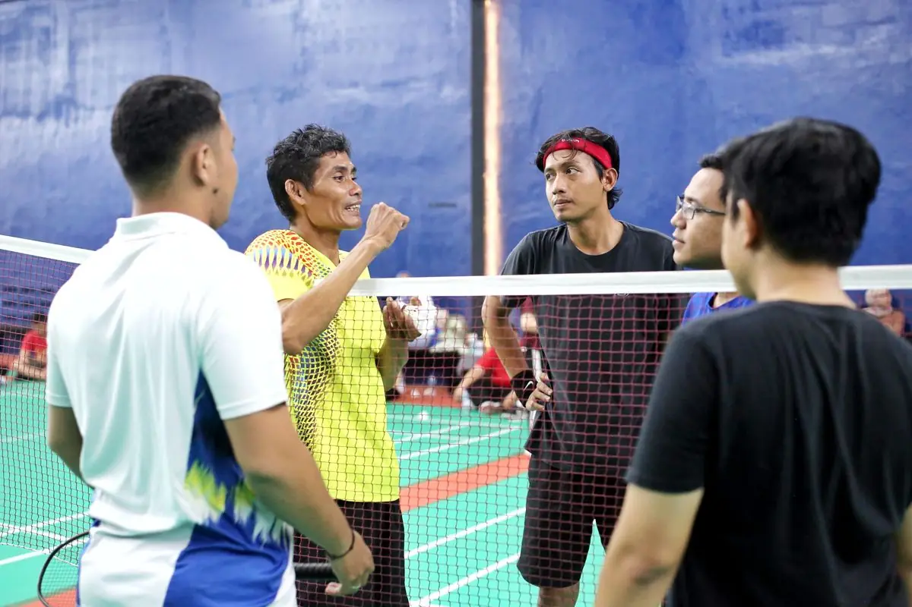
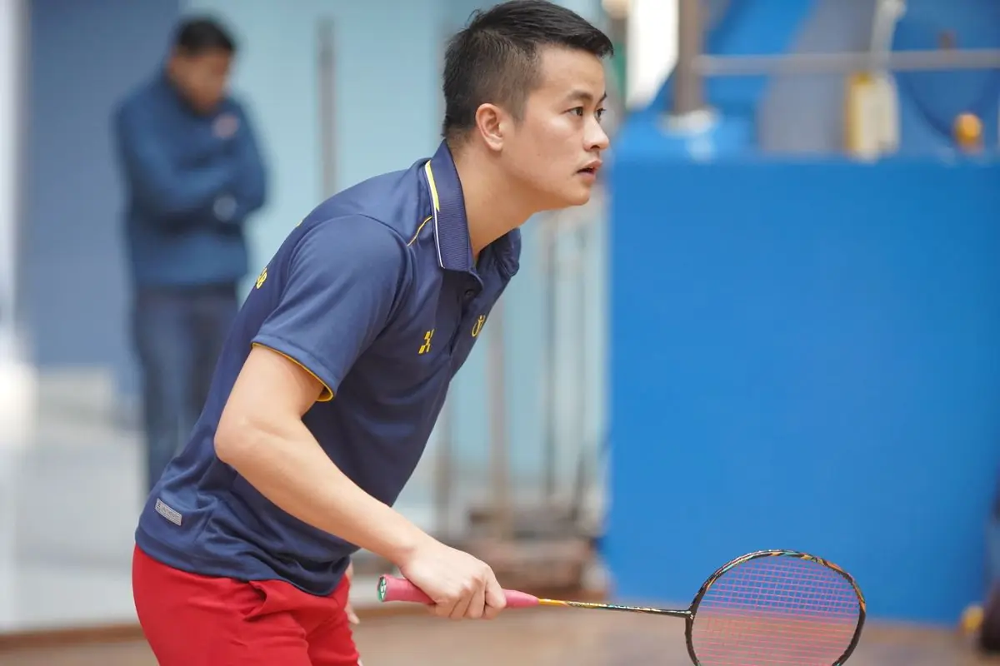
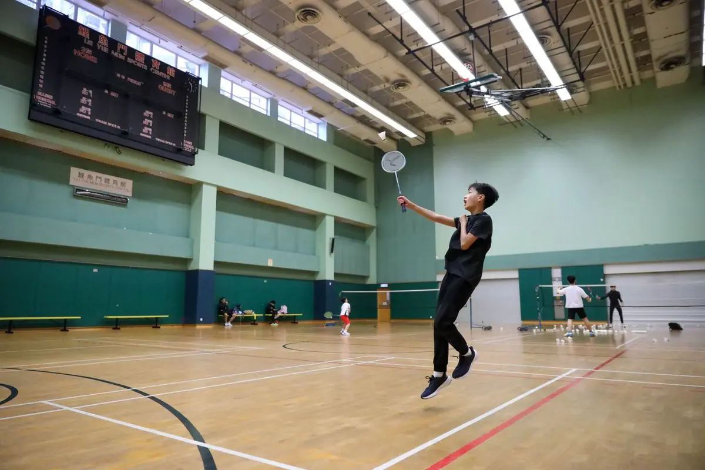
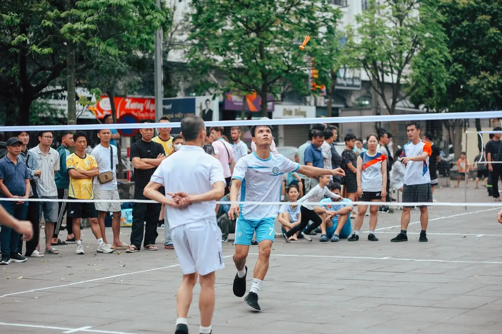

خطط التشكيل والمواقع الاستراتيجية
فهم تشكيلات الملعب المختلفة واختيار المواقع الأمثل بناءً على نقاط قوة فريقك وضعف الخصوم. نحن نركز على كيفية تنظيم نفسك وشريكك بذكاء للسيطرة على اللعبة.


الكاتب
فريق الشاهين الذهبي للمحتوى التحريري
فريق التحرير والمراجعة
كتبه فريق الشاهين الذهبي التحريري، متخصص في تقديم إرشادات عملية وموثوقة حول تكتيكات الدوران في الزوجي المختلط بالريشة الطائرة.
التشكيلات الأساسية على الملعب
التشكيل الأساسي يبدأ من فهم أدوار كل لاعب. في الزوجي المختلط، الرجل والمرأة لهما مسؤوليات مختلفة تماماً. المرأة عادة تتحكم في المنطقة الأمامية والشبكة، بينما الرجل يسيطر على الخط الخلفي والضربات الهجومية القوية.
هناك ثلاث تشكيلات رئيسية يجب إتقانها: التشكيل الأمامي-الخلفي، والتشكيل الجانبي-الجانبي، والتشكيل المختلط. كل واحد منهم له فوائده الخاصة حسب الموقف في المباراة. التشكيل الأمامي-الخلفي هو الأساسي والأفضل للفريق المهاجم.
- الأمامي-الخلفي: المرأة في الشبكة، الرجل في الخط الخلفي
- الجانبي-الجانبي: كل لاعب يسيطر على نصفه من الملعب
- المختلط: مزيج من التشكيلات حسب موقع الكرة

نقطة أساسية
اختيار التشكيل الصحيح لا يعتمد فقط على مستوى فريقك، بل على نقاط ضعف الخصم أيضاً. إذا كان الخصم ضعيفاً في المنطقة الأمامية، استخدم تشكيل أمامي-خلفي قوي. إذا كانوا متوازنين، جرّب الجانبي-جانبي لتوزيع الضغط.
المواقع الاستراتيجية الفعالة
الموقع المثالي يتغير باستمرار حسب اللعبة. بعد ضربة الإرسال، يجب أن تكون جاهزاً للتحرك السريع. الموقع الأساسي هو منتصف الملعب، وليس الخط الخلفي أو الأمامي. هذا يعطيك وقتاً أطول للتفاعل مع أي ضربة قادمة.
المسافة بينك وبين شريكك مهمة جداً. لا تقف بعيداً جداً، فستترك ثغرات كبيرة. لا تقف قريباً جداً، فستتصادم مع بعضكما. المسافة المثالية حوالي متر واحد ونصف. تذكر أن الموقع ليس ثابتاً — يجب أن تتحرك باستمرار قليلاً للبقاء في وضعية هجومية.

الانتقالات السريعة بين التشكيلات
التحول السريع من تشكيل لآخر هو ما يفصل الفرق الجيدة عن الفرق العظيمة. عندما تكون الكرة في الهواء، يجب أن تعرف بالفعل أين ستذهب وأين سيذهب شريكك. هذا يتطلب تدريباً مكثفاً وتواصلاً ممتازاً.
اقرأ الضربة
لاحظ مسار الكرة واتجاهها. هل هي ضربة دفاعية أم هجومية؟ هل الخصم في موقع قوي أم ضعيف؟
تواصل فوراً
قول شيء بسيط لشريكك — "أنا" أو "أنت" أو اسم معين. التواصل السريع يمنع التصادمات ويوضح المسؤولية.
تحرك بذكاء
لا تركض عشوائياً. تحرك في اتجاه يغطي المزيد من الملعب. إذا كنت ستركض للأمام، تأكد أن شريكك يغطي الخط الخلفي.

التكيف مع أسلوب الخصم
الخصم الذكي سيحاول كسر تشكيلك. قد يرسل الكرة إلى الثغرات بين اللاعبين، أو يضرب ضربات مفاجئة من الزوايا. يجب أن تكون مرناً وقادراً على التعديل السريع.
إذا لاحظت أن الخصم يستهدف موقعاً معيناً باستمرار، غيّر موقفك قليلاً. تحرك بشكل استباقي نحو تلك المنطقة. إذا كانوا يسيطرون على الشبكة بقوة، ابقَ أبعد قليلاً واترك لهم المسافة، ثم اضرب بقوة من الخط الخلفي. التكيف يعني البقاء واحداً خطوة أمام الخصم دائماً.

تمارين عملية للتشكيلات
التدريب على التشكيلات يتطلب تكراراً وتركيزاً. ابدأ ببطء — حرك الكرة إلى مواقع مختلفة وتدرب على الانتقال بين التشكيلات دون ضغط. بعدها، زد السرعة والشدة تدريجياً حتى تصبح الحركات آلية تماماً.
مارس مع شريكك نفس التمرين 20-30 مرة. كرر هذا 3-4 مرات أسبوعياً. بعد أسابيع قليلة، ستلاحظ أن الانتقالات أصبحت أسهل وأسرع بكثير. الفريق الذي يتقن التشكيلات بسرعة هو الفريق الذي يسيطر على المباراة.
الخلاصة والنقاط الأساسية
خطط التشكيل والمواقع الاستراتيجية ليست معقدة كما تبدو. الفكرة الأساسية بسيطة: اعرف أين تقف، اعرف أين سيقف شريكك، وكن جاهزاً للتحرك السريع. كل تشكيل له مزاياه وعيوبه. الفريق الناجح هو الذي يختار التشكيل المناسب في الوقت المناسب ويتعديل حسب الموقف.
لا تتردد في تجربة تشكيلات مختلفة في التدريب. اكتشف ما يناسب نقاط قوتك. تدرب على الانتقالات حتى تصبح طبيعية. واستمع إلى شريكك دائماً — الاتصال الجيد هو أساس أي تشكيل ناجح. مع الوقت والتمرين، ستصبح هذه الاستراتيجيات جزءاً طبيعياً من لعبتك.
ملاحظة مهمة
المعلومات المقدمة هنا لأغراض تعليمية وإرشادية فقط. كل لاعب ولاعبة لديهم احتياجات مختلفة حسب مستواهم البدني والمهاري. يُنصح بالعمل مع مدرب مختص لتطبيق هذه الاستراتيجيات بالطريقة الصحيحة. التدريب الآمن والصحيح يقلل من خطر الإصابة ويضمن تقدماً حقيقياً.